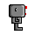
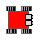

Warning
This document is in the middle of a major revision. Some sections might be missing text, or have French text as placeholder.
为了帮助你学习 Python，我会给你一些小测验：你需要通过给乐跑编程来完成，乐跑自己会告诉你结果是否正确。
让我们切换到名为 回家之一 的世界。乐跑的世界是由方块格子组成的，在左下角格子里的房子是乐跑的家。在 回家之一 里，乐跑一开始站在最下面一排的第三个格子里。当使用被称为“笛卡尔坐标”的系统时，这个位置被叫做 x=3 ， y=1 。
试试这个！
选择 回家之一 ，写一个只有一条 move() 指令的程序，试着运行一下，并观察乐跑给你的反馈。然后，修改这个程序，让乐跑回家。
再试试这个！
选择 回家之二 ，留意乐跑的位置和朝向都有所不同。试着运行同样的程序，看看会发生什么。
然后，选择 回家之三 并运行程序。
在 回家之三 里，我们的程序并没有把乐跑送回家。为了把程序完成，我们还需要再添加两条指令：
turn_left()
move()
试试这个！
在 回家之三 里，把乐跑送回家。
试试别的！
如果你不添加 turn_left() ，只添加 move() 指令，会发生什么？
你大概注意到了，我们的一直在平视着乐跑（机器人），就像这样：  ，然而我们却是在俯视着它的世界……这可能会让你觉得有些混乱，尤其是在指令它左转的时候。这时，你可以通过点击乐跑的世界顶部的图片来改变视角。比如，当乐跑面向东边时，就像刚才那张图片一样，点击另外一个视角的图片，我们就可以像这样俯视乐跑了： 